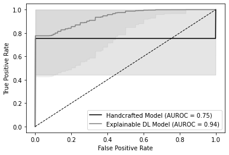
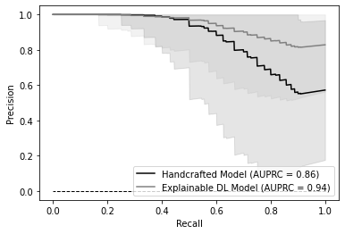

import os
import pandas as pd
import numpy as np
import seaborn as sns
import matplotlib.pyplot as plt
import scipy.stats as stats
import random
import statsmodels.api as sm
from sklearn.feature_selection import VarianceThreshold
from sklearn.preprocessing import StandardScaler
from sklearn.linear_model import LogisticRegression
from sklearn.metrics import precision_recall_curve, roc_curve, roc_auc_score, auc, average_precision_score, precision_score, recall_score, f1_score
from sklearn.model_selection import GridSearchCV
#from sklearn.utils import resample
from scipy.cluster.hierarchy import linkage, dendrogram, fcluster
from scipy.spatial.distance import squareformModel Building
from google.colab import drive
drive.mount('/content/drive',force_remount = True)
drive_dir = "/content/drive/My Drive"
mount_dir = os.path.join(drive_dir, "Colab Notebooks")
results_dir = os.path.join(mount_dir, "results_folder")Mounted at /content/drive1. Data Preproccesing
1.1 Radiomic Features
# load data set
radiomic_feats = pd.read_csv(os.path.join(results_dir, "RadiomicFeatures.csv"))
radiomic_feats.head()| original_shape_Elongation | original_shape_Flatness | original_shape_LeastAxisLength | original_shape_MajorAxisLength | original_shape_Maximum2DDiameterColumn | original_shape_Maximum2DDiameterRow | original_shape_Maximum2DDiameterSlice | original_shape_Maximum3DDiameter | original_shape_MeshVolume | original_shape_MinorAxisLength | ... | original_glszm_LargeAreaLowGrayLevelEmphasis | original_glszm_LowGrayLevelZoneEmphasis | original_glszm_SizeZoneNonUniformity | original_glszm_SizeZoneNonUniformityNormalized | original_glszm_SmallAreaEmphasis | original_glszm_SmallAreaHighGrayLevelEmphasis | original_glszm_SmallAreaLowGrayLevelEmphasis | original_glszm_ZoneEntropy | original_glszm_ZonePercentage | original_glszm_ZoneVariance | |
|---|---|---|---|---|---|---|---|---|---|---|---|---|---|---|---|---|---|---|---|---|---|
| 0 | 0.527583 | 0.513377 | 57.283694 | 111.582079 | 114.212590 | 115.152790 | 73.284082 | 122.643745 | 237540.783691 | 58.868845 | ... | 17.019354 | 0.011378 | 489.785185 | 0.403115 | 0.658978 | 136.257830 | 0.007516 | 6.080010 | 0.180107 | 3255.880190 |
| 1 | 0.000000 | 0.000000 | 0.000000 | 0.000000 | 0.000000 | 0.000000 | 0.000000 | 0.000000 | 0.000000 | 0.000000 | ... | 0.000000 | 0.000000 | 0.000000 | 0.000000 | 0.000000 | 0.000000 | 0.000000 | 0.000000 | 0.000000 | 0.000000 |
| 2 | 0.521267 | 0.446565 | 45.221860 | 101.266101 | 113.592903 | 100.020486 | 60.776486 | 113.771650 | 164111.006592 | 52.786691 | ... | 39.427170 | 0.014237 | 1231.206019 | 0.382006 | 0.641698 | 130.008726 | 0.007626 | 6.319431 | 0.143800 | 10372.099039 |
| 3 | 0.565475 | 0.449311 | 46.427784 | 103.331131 | 113.553247 | 112.623081 | 68.007353 | 115.767666 | 194060.038535 | 58.431183 | ... | 26.608202 | 0.020693 | 1239.888344 | 0.433983 | 0.685239 | 89.661381 | 0.013659 | 5.961805 | 0.161058 | 5504.858331 |
| 4 | 0.485448 | 0.407476 | 42.413620 | 104.088690 | 111.060812 | 106.570473 | 58.235949 | 111.219413 | 154694.140625 | 50.529691 | ... | 13.131031 | 0.015890 | 1038.289971 | 0.377286 | 0.636561 | 129.422304 | 0.008716 | 6.460849 | 0.150145 | 4201.871850 |
5 rows × 72 columns
# create id vector
id_less10 = np.array((['LIVER_00' + str(n) for n in range(1,10)]))
id_geq10 = np.array((['LIVER_0' + str(n) for n in range(10,41)]))
ids = np.hstack((id_less10, id_geq10))
radiomic_feats['id'] = ids.tolist()
# add outcome variable to df
HCC = np.concatenate((np.ones(20), np.zeros(20)), axis=0)
radiomic_feats['HCC'] = HCC.tolist()# remove rows with all 0s
radiomic_feats = radiomic_feats[radiomic_feats.drop(['id','HCC'], axis=1).ne(0).any(axis=1)].reset_index(drop=True)
radiomic_feats.shape # 6 rows with all missings(34, 74)# remove constant features
constant_filter = VarianceThreshold(threshold=0)
constant_filter.fit(radiomic_feats.drop(['id','HCC'], axis=1))
constant_columns = [column for column in radiomic_feats.drop(['id','HCC'], axis=1).columns
if column not in radiomic_feats.drop(['id','HCC'], axis=1).columns[constant_filter.get_support()]]
radiomic_feats.drop(labels=constant_columns, axis=1, inplace=True)
radiomic_feats.shape # no constant features (34, 74)# remove quasi constant features
qconstant_filter = VarianceThreshold(threshold=0.001)
qconstant_filter.fit(radiomic_feats.drop(['id','HCC'], axis=1))
qconstant_columns = [column for column in radiomic_feats.drop(['id','HCC'], axis=1).columns
if column not in radiomic_feats.drop(['id','HCC'], axis=1).columns[qconstant_filter.get_support()]]
radiomic_feats.drop(labels=qconstant_columns, axis=1, inplace=True)
radiomic_feats.shape # 8 quasi-constant features(34, 66)# get column names
radiomic_col = list(radiomic_feats.drop(['id','HCC'], axis=1).columns)
# z-score standardize predictors
scaler = StandardScaler()
radiomic_feats_std = scaler.fit_transform(radiomic_feats.drop(['id','HCC'], axis=1))
radiomic_feats_std = pd.DataFrame(radiomic_feats_std, columns=radiomic_col)
# concatenate both dfs
radiomic_feats = pd.concat([radiomic_feats.loc[:,['id','HCC']].reset_index(drop=True), radiomic_feats_std], axis=1)1.2 Deep Features
# load data set
deep_feats = pd.read_csv(os.path.join(results_dir, "DeepFeaturesNew.csv"))
deep_feats.head()| id | HCC | var1 | var2 | var3 | var4 | var5 | var6 | var7 | var8 | ... | var119 | var120 | var121 | var122 | var123 | var124 | var125 | var126 | var127 | var128 | |
|---|---|---|---|---|---|---|---|---|---|---|---|---|---|---|---|---|---|---|---|---|---|
| 0 | LIVER_023 | 0 | -0.202069 | -0.088254 | -0.257660 | -0.077059 | 0.215050 | -0.167437 | 0.140313 | 0.088868 | ... | -0.337239 | 0.179754 | -0.075700 | 0.287734 | -0.091015 | -0.272713 | -0.090688 | 0.186573 | 0.134264 | 0.078066 |
| 1 | LIVER_039 | 0 | -0.176814 | -0.059283 | -0.261327 | -0.082698 | 0.048886 | -0.001115 | 0.035702 | 0.119655 | ... | -0.183480 | 0.332741 | -0.014124 | 0.290838 | -0.033038 | -0.095075 | -0.019054 | -0.008752 | -0.020521 | -0.027283 |
| 2 | LIVER_028 | 0 | 0.378205 | -0.237747 | -0.137053 | -0.093801 | 0.515436 | 0.073770 | -0.398368 | 0.171456 | ... | -0.159522 | 0.967786 | -0.021786 | 0.427982 | -0.292361 | 0.367582 | 0.179641 | -0.023854 | -0.038469 | 0.641371 |
| 3 | LIVER_019 | 1 | 0.706900 | -0.379466 | -0.093411 | -0.128402 | 0.670975 | 0.208453 | -0.736853 | 0.319404 | ... | -0.052715 | 1.555141 | 0.096538 | 0.550754 | -0.380608 | 0.847317 | 0.378209 | -0.217176 | -0.256849 | 0.978573 |
| 4 | LIVER_006 | 1 | -0.161161 | -0.052261 | -0.263995 | -0.086058 | -0.011500 | 0.039052 | 0.001275 | 0.129955 | ... | -0.149543 | 0.408186 | 0.012220 | 0.285333 | -0.026853 | -0.051228 | 0.000157 | -0.065999 | -0.062883 | -0.082519 |
5 rows × 130 columns
# remove rows with all 0s
deep_feats = deep_feats[deep_feats.drop(['id','HCC'], axis=1).ne(0).any(axis=1)].reset_index(drop=True)
deep_feats.shape # No rows with all missings(40, 130)# remove constant features
constant_filter = VarianceThreshold(threshold=0)
constant_filter.fit(deep_feats.drop(['id','HCC'], axis=1))
constant_columns = [column for column in deep_feats.drop(['id','HCC'], axis=1).columns
if column not in deep_feats.drop(['id','HCC'], axis=1).columns[constant_filter.get_support()]]
deep_feats.drop(labels=constant_columns, axis=1, inplace=True)
deep_feats.shape # no constant features (40, 130)# remove quasi-constant features
constant_filter = VarianceThreshold(threshold=0.001)
constant_filter.fit(deep_feats.drop(['id','HCC'], axis=1))
constant_columns = [column for column in deep_feats.drop(['id','HCC'], axis=1).columns
if column not in deep_feats.drop(['id','HCC'], axis=1).columns[constant_filter.get_support()]]
deep_feats.drop(labels=constant_columns, axis=1, inplace=True)
deep_feats.shape # 1 quasi-constant feature(40, 129)# get column names
deep_col = list(deep_feats.drop(['id','HCC'], axis=1).columns)
# z-score standardize predictors
scaler = StandardScaler()
deep_feats_std = scaler.fit_transform(deep_feats.drop(['id','HCC'], axis=1))
deep_feats_std = pd.DataFrame(deep_feats_std, columns=deep_col)
# concatenate both dfs
deep_feats = pd.concat([deep_feats.loc[:,['id','HCC']].reset_index(drop=True), deep_feats_std], axis=1)# compute correlation between deep and handcrafted features
combined_feats = pd.concat([deep_feats.drop(['id','HCC'], axis=1), radiomic_feats.drop(['id','HCC'], axis=1)], axis=1, keys=['deep', 'rad'])
corr_mtx = combined_feats.corr().loc['rad', 'deep']# drop all features with r < 0.5 with handcrafted features
keep = list()
for row in range(len(corr_mtx)):
for col in range(len(corr_mtx.columns)):
if(abs(corr_mtx.iloc[row, col]) >= 0.5):
keep.append(col)
keep_set = list(set(keep))
keepcols_names = list(deep_feats.drop(['id','HCC'], axis=1).columns[[item for item in keep_set]])# drop non-correlated features
corr_deep_feats = deep_feats[keepcols_names]
corr_deep_feats = pd.concat([deep_feats.loc[:,['id','HCC']].reset_index(drop=True), corr_deep_feats], axis=1)
corr_deep_feats.shape # 38 explainable deep features(40, 106)2. Model Building
2.1 Hyperparameter Tuning and Bootstrapping of Performance Metrics
# create index
index = deep_feats['id'].iloc[-8:]
# create list of data frames
list_of_datasets = [radiomic_feats, corr_deep_feats]
# define hyperparameters
param = {'C':np.logspace(-3,3,7), 'penalty':['l1'], 'solver':['liblinear']}
# define range to be interpolated to
fpr_mean = np.linspace(0, 1, 1000)
recall_mean = np.linspace(0, 1, 1000)
# create storage
metrics = ['acc', 'auroc', 'precision', 'recall', 'fscore', 'auc_prc',
'interp_tprs', 'tpr_mean', 'tpr_std', 'tpr_upper', 'tpr_lower',
'interp_prec', 'prec_mean', 'prec_std', 'prec_upper', 'prec_lower']
results = {
0: {m:[] for m in metrics},
1: {m:[] for m in metrics},
}# loop over both datasets
for dataset in list_of_datasets:
if len(dataset) < 40:
counter = 0
else:
counter = 1
# divide dataset in 80%:20% split
train_X = dataset[~dataset['id'].isin(index)].drop(['id','HCC'], axis=1)
test_X = dataset[dataset['id'].isin(index)].drop(['id','HCC'], axis=1)
train_y = dataset[~dataset['id'].isin(index)]['HCC']
test_y = dataset[dataset['id'].isin(index)]['HCC']
# fit logistic regression model
model = LogisticRegression(random_state=123)
# obtain tuned hyperparameters using 3-fold cv
model_cv = GridSearchCV(model, param, cv=3, refit=True, scoring='accuracy')
model_cv = model_cv.fit(train_X, train_y)
# print optimizied hyperparameter settings
print("best parameters:", model_cv.best_params_)
# obtain bootstrapped performance metric estimates
n_iterations = 1000
for iter in range(n_iterations):
# resample test data with replacement
boot_X, boot_y = resample(test_X, test_y, replace=True, n_samples=16, random_state=iter)
# make predictions
pred = model_cv.predict(boot_X)
# compute accuracy
acc = model_cv.score(boot_X, boot_y)
# compute predicted probabilities
pred_prob = model_cv.predict_proba(boot_X)
# compute false-positive and true-positive rate
fpr, tpr, _ = roc_curve(boot_y, pred_prob[:,1])
interp_tpr = np.interp(fpr_mean, fpr, tpr)
interp_tpr[0] = 0.0
# compute area under receiving operator curve
auroc = roc_auc_score(boot_y, pred_prob[:,1])
# compute precision and recall
precisionr, recallr, _ = precision_recall_curve(boot_y, pred_prob[:,1])
reversed_recall = np.fliplr([recallr])[0]
reversed_precision = np.fliplr([precisionr])[0]
interp_prec = np.interp(recall_mean, reversed_recall, reversed_precision)
interp_prec[0] = 1.0
# compute area under precision recall curve
auc_prc = auc(recallr, precisionr)
# compute other performance metrics
precision = precision_score(boot_y, pred)
recall = recall_score(boot_y, pred)
fscore = f1_score(boot_y, pred)
# store performance metrics
results[counter]['acc'].append(acc)
results[counter]['auroc'].append(auroc)
results[counter]['interp_tprs'].append(interp_tpr)
results[counter]['precision'].append(precision)
results[counter]['recall'].append(recall)
results[counter]['interp_prec'].append(interp_prec)
results[counter]['fscore'].append(fscore)
results[counter]['auc_prc'].append(auc_prc)
# compute mean, std, and upper/lower bound of true positive rate
tpr_mean = np.mean(results[counter]['interp_tprs'], axis=0)
tpr_mean[-1] = 1.0
tpr_std = 2*np.std(results[counter]['interp_tprs'], axis=0)
tpr_upper = np.clip(tpr_mean+tpr_std, 0, 1)
tpr_lower = tpr_mean-tpr_std
# compute mean, std, and upper/lower bound of precision
prec_mean = np.mean(results[counter]['interp_prec'], axis=0)
prec_std = 2*np.std(results[counter]['interp_prec'], axis=0)
prec_upper = np.clip(prec_mean+prec_std, 0, 1)
prec_lower = prec_mean-prec_std
# store computed statistics
results[counter]['tpr_mean'].append(tpr_mean)
results[counter]['tpr_std'].append(tpr_std)
results[counter]['tpr_upper'].append(tpr_upper)
results[counter]['tpr_lower'].append(tpr_lower)
results[counter]['prec_mean'].append(prec_mean)
results[counter]['prec_std'].append(prec_std)
results[counter]['prec_upper'].append(prec_upper)
results[counter]['prec_lower'].append(prec_lower)best parameters: {'C': 1000.0, 'penalty': 'l1', 'solver': 'liblinear'}/usr/local/lib/python3.8/dist-packages/sklearn/metrics/_classification.py:1318: UndefinedMetricWarning: Precision is ill-defined and being set to 0.0 due to no predicted samples. Use `zero_division` parameter to control this behavior.
_warn_prf(average, modifier, msg_start, len(result))
/usr/local/lib/python3.8/dist-packages/sklearn/metrics/_classification.py:1318: UndefinedMetricWarning: Precision is ill-defined and being set to 0.0 due to no predicted samples. Use `zero_division` parameter to control this behavior.
_warn_prf(average, modifier, msg_start, len(result))
/usr/local/lib/python3.8/dist-packages/sklearn/metrics/_classification.py:1318: UndefinedMetricWarning: Precision is ill-defined and being set to 0.0 due to no predicted samples. Use `zero_division` parameter to control this behavior.
_warn_prf(average, modifier, msg_start, len(result))
/usr/local/lib/python3.8/dist-packages/sklearn/metrics/_classification.py:1318: UndefinedMetricWarning: Precision is ill-defined and being set to 0.0 due to no predicted samples. Use `zero_division` parameter to control this behavior.
_warn_prf(average, modifier, msg_start, len(result))
/usr/local/lib/python3.8/dist-packages/sklearn/metrics/_classification.py:1318: UndefinedMetricWarning: Precision is ill-defined and being set to 0.0 due to no predicted samples. Use `zero_division` parameter to control this behavior.
_warn_prf(average, modifier, msg_start, len(result))
/usr/local/lib/python3.8/dist-packages/sklearn/metrics/_classification.py:1318: UndefinedMetricWarning: Precision is ill-defined and being set to 0.0 due to no predicted samples. Use `zero_division` parameter to control this behavior.
_warn_prf(average, modifier, msg_start, len(result))
/usr/local/lib/python3.8/dist-packages/sklearn/metrics/_classification.py:1318: UndefinedMetricWarning: Precision is ill-defined and being set to 0.0 due to no predicted samples. Use `zero_division` parameter to control this behavior.
_warn_prf(average, modifier, msg_start, len(result))
/usr/local/lib/python3.8/dist-packages/sklearn/metrics/_classification.py:1318: UndefinedMetricWarning: Precision is ill-defined and being set to 0.0 due to no predicted samples. Use `zero_division` parameter to control this behavior.
_warn_prf(average, modifier, msg_start, len(result))best parameters: {'C': 1.0, 'penalty': 'l1', 'solver': 'liblinear'}# plot receiving operater curves
plt.plot(fpr_mean, np.squeeze(results[0]['tpr_mean'], axis=0),
label="Handcrafted Model (AUROC = %0.2f)" % np.mean(results[0]['auroc']),
color='black')
plt.fill_between(fpr_mean, np.squeeze(results[0]['tpr_lower'], axis=0),
np.squeeze(results[0]['tpr_upper'], axis=0), color='black', alpha=0.1)
plt.plot(fpr_mean, np.squeeze(results[1]['tpr_mean'], axis=0),
label="Explainable DL Model (AUROC = %0.2f)" % np.mean(results[1]['auroc']),
color='grey')
plt.fill_between(fpr_mean, np.squeeze(results[1]['tpr_lower'], axis=0),
np.squeeze(results[1]['tpr_upper'], axis=0), color='grey', alpha=0.1)
plt.plot([0, 1], [0, 1], color="black", lw=1, linestyle="--")
plt.xlabel("False Positive Rate")
plt.ylabel("True Positive Rate")
plt.legend(loc="lower right")
plt.savefig(os.path.join(data_dir, 'auroc.png'), dpi=300)
# plot precision recall curves
plt.plot(recall_mean, np.squeeze(results[0]['prec_mean'], axis=0),
label="Handcrafted Model (AUPRC = %0.2f)" % np.mean(results[0]['auc_prc']),
color='black')
plt.fill_between(recall_mean, np.squeeze(results[0]['prec_lower'], axis=0),
np.squeeze(results[0]['prec_upper'], axis=0), color='black', alpha=0.1)
plt.plot(recall_mean, np.squeeze(results[1]['prec_mean'], axis=0),
label="Explainable DL Model (AUPRC = %0.2f)" % np.mean(results[1]['auc_prc']),
color='grey')
plt.fill_between(recall_mean, np.squeeze(results[1]['prec_lower'], axis=0),
np.squeeze(results[1]['prec_upper'], axis=0), color='grey', alpha=0.1)
plt.plot([1, 0], [0, 0], color="black", lw=1, linestyle="--")
plt.xlabel("Recall")
plt.ylabel("Precision")
plt.legend(loc="lower right")
plt.savefig(os.path.join(data_dir, 'auprc.png'), dpi=300)
def get_confidence_interval(boot_estimates):
mean = np.mean(boot_estimates, axis=0)
std = 2*np.std(boot_estimates, axis=0)
upper = np.clip(mean+std, 0, 1)
lower = mean-std
return mean, lower, upperget_confidence_interval(results[0]['acc']) # accuracy = 0.752 [0.537, 0.968]
get_confidence_interval(results[1]['acc']) # accuracy = 0.748 [0.525, 0.972]
get_confidence_interval(results[0]['precision']) # precision = 0.992 [0.814, 1.000]
get_confidence_interval(results[1]['precision']) # precision = 0.748 [0.427, 1.000]
get_confidence_interval(results[0]['recall']) # recall = 0.509 [0.146, 0.871]
get_confidence_interval(results[1]['recall']) # recall = 0.747 [0.422, 1.000]
get_confidence_interval(results[0]['fscore']) # F1-score = 0.654 [0.317, 0.992]
get_confidence_interval(results[1]['fscore']) # F1-score = 0.734 [0.466, 1.000](0.7341384574113313, 0.4663404647013065, 1.0)2.2 Derivation of Regression Coefficients
# divide dataset in 80%:20% split
train_X = corr_deep_feats[~corr_deep_feats['id'].isin(index)].drop(['id','HCC'], axis=1)
test_X = corr_deep_feats[corr_deep_feats['id'].isin(index)].drop(['id','HCC'], axis=1)
train_y = corr_deep_feats[~corr_deep_feats['id'].isin(index)]['HCC']
test_y = corr_deep_feats[corr_deep_feats['id'].isin(index)]['HCC']
# get coefficients
logit_mod = sm.Logit(train_y, train_X)
logit_res = logit_mod.fit_regularized(alpha=1)Optimization terminated successfully (Exit mode 0)
Current function value: 0.30872103065595147
Iterations: 80
Function evaluations: 83
Gradient evaluations: 80# print summary
logit_res.summary2()| Model: | Logit | Pseudo R-squared: | 0.712 |
| Dependent Variable: | HCC | AIC: | 18.7549 |
| Date: | 2023-01-07 13:50 | BIC: | 23.1521 |
| No. Observations: | 32 | Log-Likelihood: | -6.3774 |
| Df Model: | 2 | LL-Null: | -22.181 |
| Df Residuals: | 29 | LLR p-value: | 1.3700e-07 |
| Converged: | 1.0000 | Scale: | 1.0000 |
| No. Iterations: | 80.0000 |
| Coef. | Std.Err. | z | P>|z| | [0.025 | 0.975] | |
|---|---|---|---|---|---|---|
| var1 | 0.0000 | nan | nan | nan | nan | nan |
| var2 | 0.0000 | nan | nan | nan | nan | nan |
| var3 | 0.0000 | nan | nan | nan | nan | nan |
| var5 | 0.0000 | nan | nan | nan | nan | nan |
| var7 | 0.0000 | nan | nan | nan | nan | nan |
| var9 | 0.0000 | nan | nan | nan | nan | nan |
| var10 | 0.0000 | nan | nan | nan | nan | nan |
| var11 | 0.0000 | nan | nan | nan | nan | nan |
| var12 | -0.3247 | 0.8503 | -0.3818 | 0.7026 | -1.9912 | 1.3419 |
| var13 | 0.0000 | nan | nan | nan | nan | nan |
| var14 | 0.0000 | nan | nan | nan | nan | nan |
| var15 | 0.0000 | nan | nan | nan | nan | nan |
| var16 | 0.0000 | nan | nan | nan | nan | nan |
| var17 | 0.0000 | nan | nan | nan | nan | nan |
| var18 | 0.0000 | nan | nan | nan | nan | nan |
| var19 | 0.0000 | nan | nan | nan | nan | nan |
| var22 | 0.0000 | nan | nan | nan | nan | nan |
| var26 | 0.0000 | nan | nan | nan | nan | nan |
| var27 | 0.0000 | nan | nan | nan | nan | nan |
| var28 | 0.0000 | nan | nan | nan | nan | nan |
| var29 | 0.0000 | nan | nan | nan | nan | nan |
| var30 | 0.0000 | nan | nan | nan | nan | nan |
| var31 | 0.0000 | nan | nan | nan | nan | nan |
| var32 | -1.0814 | 0.6035 | -1.7921 | 0.0731 | -2.2642 | 0.1013 |
| var33 | 0.0000 | nan | nan | nan | nan | nan |
| var34 | 0.0000 | nan | nan | nan | nan | nan |
| var35 | 0.0000 | nan | nan | nan | nan | nan |
| var36 | 0.0000 | nan | nan | nan | nan | nan |
| var38 | 0.0000 | nan | nan | nan | nan | nan |
| var39 | 0.0000 | nan | nan | nan | nan | nan |
| var40 | 0.0000 | nan | nan | nan | nan | nan |
| var42 | 0.0000 | nan | nan | nan | nan | nan |
| var43 | 0.0000 | nan | nan | nan | nan | nan |
| var44 | 0.0000 | nan | nan | nan | nan | nan |
| var45 | 0.0000 | nan | nan | nan | nan | nan |
| var46 | 0.0000 | nan | nan | nan | nan | nan |
| var47 | 0.0000 | nan | nan | nan | nan | nan |
| var48 | 0.0000 | nan | nan | nan | nan | nan |
| var49 | 0.0000 | nan | nan | nan | nan | nan |
| var50 | 0.0000 | nan | nan | nan | nan | nan |
| var51 | 0.0000 | nan | nan | nan | nan | nan |
| var52 | 0.0000 | nan | nan | nan | nan | nan |
| var53 | 0.0000 | nan | nan | nan | nan | nan |
| var54 | 0.0000 | nan | nan | nan | nan | nan |
| var56 | 0.0000 | nan | nan | nan | nan | nan |
| var58 | 0.0000 | nan | nan | nan | nan | nan |
| var59 | 0.0000 | nan | nan | nan | nan | nan |
| var61 | 0.0000 | nan | nan | nan | nan | nan |
| var62 | 0.0000 | nan | nan | nan | nan | nan |
| var63 | 0.0000 | nan | nan | nan | nan | nan |
| var64 | 0.0000 | nan | nan | nan | nan | nan |
| var65 | 0.0000 | nan | nan | nan | nan | nan |
| var66 | 0.0000 | nan | nan | nan | nan | nan |
| var67 | 0.0000 | nan | nan | nan | nan | nan |
| var68 | 0.0000 | nan | nan | nan | nan | nan |
| var69 | 0.0000 | nan | nan | nan | nan | nan |
| var70 | 0.0000 | nan | nan | nan | nan | nan |
| var71 | 0.0000 | nan | nan | nan | nan | nan |
| var72 | 0.0000 | nan | nan | nan | nan | nan |
| var73 | 0.0000 | nan | nan | nan | nan | nan |
| var74 | 0.0000 | nan | nan | nan | nan | nan |
| var75 | 0.0000 | nan | nan | nan | nan | nan |
| var76 | 0.0000 | nan | nan | nan | nan | nan |
| var78 | 0.0000 | nan | nan | nan | nan | nan |
| var79 | 0.0000 | nan | nan | nan | nan | nan |
| var80 | -2.0955 | 0.9614 | -2.1796 | 0.0293 | -3.9799 | -0.2112 |
| var81 | 0.0000 | nan | nan | nan | nan | nan |
| var82 | 0.0000 | nan | nan | nan | nan | nan |
| var83 | 0.0000 | nan | nan | nan | nan | nan |
| var84 | 0.0000 | nan | nan | nan | nan | nan |
| var85 | 0.0000 | nan | nan | nan | nan | nan |
| var87 | 0.0000 | nan | nan | nan | nan | nan |
| var89 | 0.0000 | nan | nan | nan | nan | nan |
| var90 | 0.0000 | nan | nan | nan | nan | nan |
| var91 | 0.0000 | nan | nan | nan | nan | nan |
| var92 | 0.0000 | nan | nan | nan | nan | nan |
| var93 | 0.0000 | nan | nan | nan | nan | nan |
| var94 | 0.0000 | nan | nan | nan | nan | nan |
| var97 | 0.0000 | nan | nan | nan | nan | nan |
| var98 | 0.0000 | nan | nan | nan | nan | nan |
| var99 | 0.0000 | nan | nan | nan | nan | nan |
| var101 | 0.0000 | nan | nan | nan | nan | nan |
| var102 | 0.0000 | nan | nan | nan | nan | nan |
| var103 | 0.0000 | nan | nan | nan | nan | nan |
| var104 | 0.0000 | nan | nan | nan | nan | nan |
| var106 | 0.0000 | nan | nan | nan | nan | nan |
| var107 | 0.0000 | nan | nan | nan | nan | nan |
| var108 | 0.0000 | nan | nan | nan | nan | nan |
| var109 | 0.0000 | nan | nan | nan | nan | nan |
| var110 | 0.0000 | nan | nan | nan | nan | nan |
| var111 | 0.0000 | nan | nan | nan | nan | nan |
| var112 | 0.0000 | nan | nan | nan | nan | nan |
| var113 | 0.0000 | nan | nan | nan | nan | nan |
| var114 | 0.0000 | nan | nan | nan | nan | nan |
| var115 | 0.0000 | nan | nan | nan | nan | nan |
| var116 | 0.0000 | nan | nan | nan | nan | nan |
| var117 | 0.0000 | nan | nan | nan | nan | nan |
| var118 | 0.0000 | nan | nan | nan | nan | nan |
| var120 | 0.0000 | nan | nan | nan | nan | nan |
| var122 | 0.0000 | nan | nan | nan | nan | nan |
| var123 | 0.0000 | nan | nan | nan | nan | nan |
| var124 | 0.0000 | nan | nan | nan | nan | nan |
| var125 | 0.0000 | nan | nan | nan | nan | nan |
| var128 | 0.0000 | nan | nan | nan | nan | nan |
import math
math.exp(-0.3247) # 0.723
math.exp(-1.0814) # 0.339
math.exp(-2.0955) # 0.1230.12300872391335757pd.set_option('display.max_rows', None)
corr_mtx.loc[:,['var12','var32','var80']]
# var12: 90Percentile, Mean, Median, RootMeanSquared
# var32: SizeZoneNonUniformity(glszm)
# var80: 10Percentile, 90Percentile, Maximum, MeanAbsoluteDeviation, Median, Range,
# RobustMeanAbsoluteDeviation, RootMeanSquared, TotalEnergy, Variance